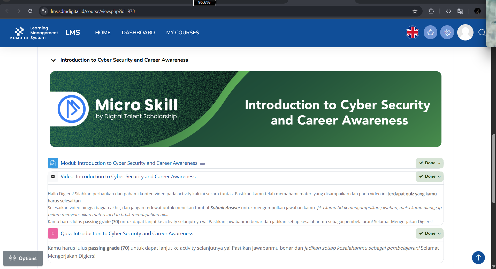
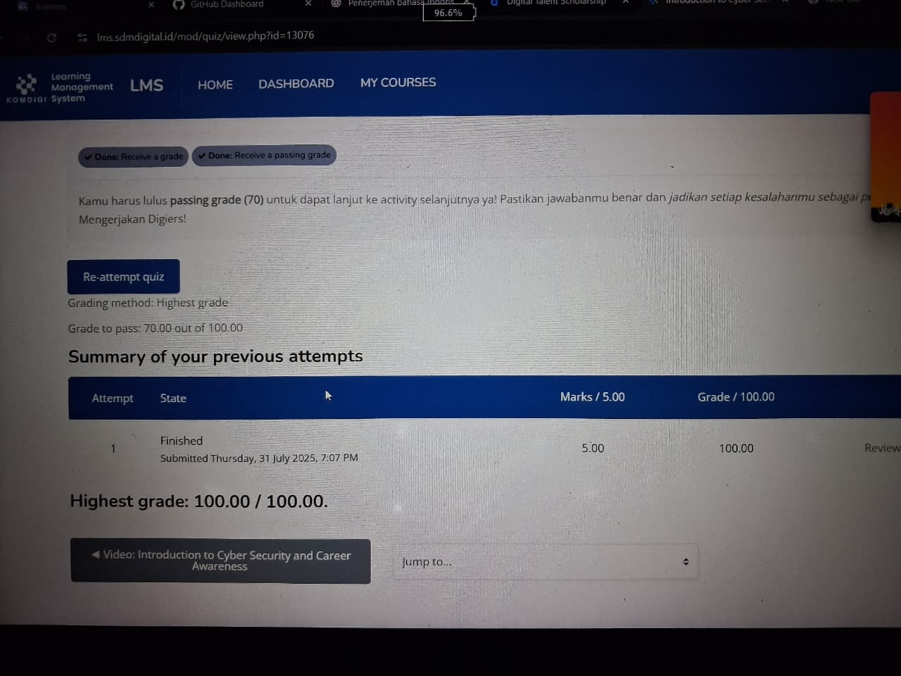
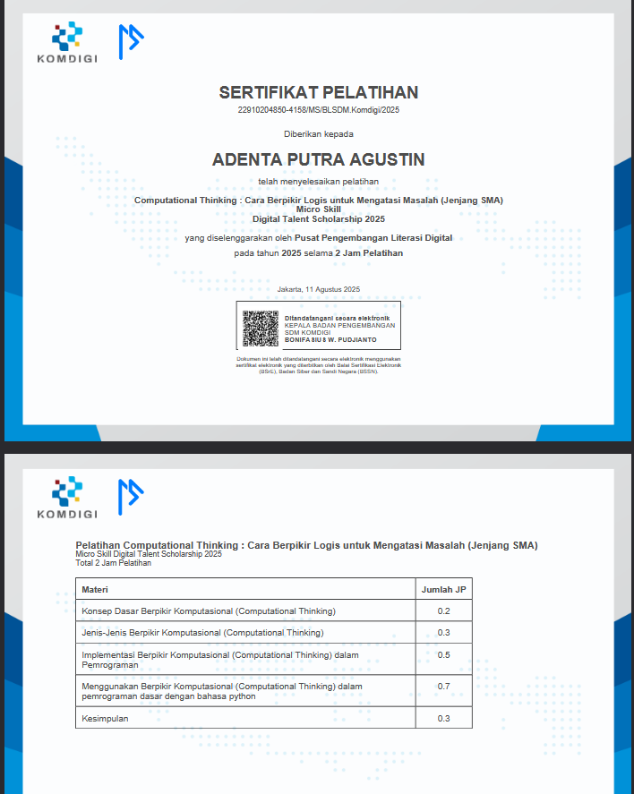

Identitas Kegiatan
Nama Siswa: Adenta Putra
Program: Digital Talent Scholarship
Penyelenggara: Pak sam, Kementerian Komunikasi dan Informatika Republik Indonesia
Tanggal Pelaksanaan: July, 16 2025-July, 17 2025
Tujuan Pembelajaran
Meningkatkan kompetensi di bidang teknologi informasi dan komunikasi melalui pembelajaran terstruktur, materi terkini, dan praktik langsung yang relevan dengan kebutuhan sekolah atau industri.
Materi Pokok
- Pemrograman Web Dasar (HTML, CSS, JavaScript)
- Pengembangan Aplikasi Modern
- Manajemen Proyek Digital
- Keamanan Siber Dasar
Pengalaman Belajar
Selama mengikuti pelatihan, saya mendapatkan pengalaman belajar melalui pembelajaran daring interaktif, diskusi kelompok, studi kasus, dan proyek akhir yang mengasah keterampilan teknis dan soft skill.
Hasil Capaian
- Mampu membangun website responsif
- Memahami konsep keamanan siber dasar
- Menguasai penggunaan Git dan GitHub
Foto Sertifikat
Kesimpulan
Program Digital Talent Scholarship memberikan kesempatan berharga untuk meningkatkan keterampilan di bidang digital. Pembelajaran yang terstruktur, materi yang relevan, dan dukungan dari instruktur membuat proses belajar menjadi efektif dan menyenangkan.